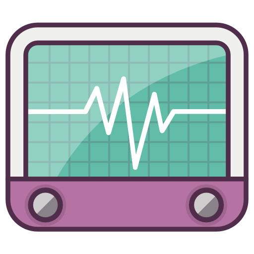

Debes activar el bluetooth para utilizar esta característica

Pulsa la imagen para buscar tu dispositivo myband

Emparejando...
Emparejada
Para comenzarlo activa el botón de abajo.
Comenzar

El siguiente paso consiste en un ejercicio de respiración, la duración es de minuto y medio, debes acompañar tu respiración
con la imagen que aparecerá.
Durante el ejercicio sonará música asi que sería recomendable usar auriculares.
El color del circulo irá variando:
- Este color indica que las pulsaciones están por encima de lo que deberían.
Este color indica que las pulsaciones están por encima de lo que deberían.
- Este color indica que las pulsaciones están bajando adecuadamente.
- Este color indica que las pulsaciones están en el estado correcto.
Este color indica que las pulsaciones están en el estado correcto.
Cuando estés preparado haz click en el botón comenzar.
Durante el ejercicio sonará música asi que sería recomendable usar auriculares.
El color del circulo irá variando:
-
- Este color indica que las pulsaciones están bajando adecuadamente.
-
Cuando estés preparado haz click en el botón comenzar.